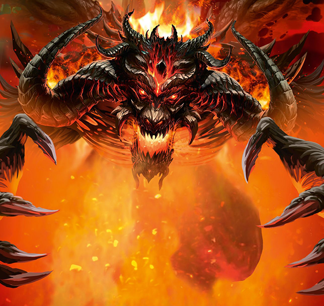

Ano, i desková hra jako Sanctum má svůj příběh v pozadí. Dozvíte se informace nejen o městu Sanctu a tajemstvích, která skrývá pod sebou, ale také o příbězích jednotlivých hrdinů.
V legendách se praví, že v dávných časech povstal z hlubin pekla Malghazar, pán démonů.
Jeho temní přisluhovači se rozlezli do všech koutů světa a za sebou nechali jen spálenou zem. Ale z trosek se zrodili velcí hrdinové, kteří se probojovali až k samotnému Malghazarovi. Za pomoci štěstí, s velkou dávkou odvahy a s přispěním magických sil se jim podařilo uvěznit pána démonů v nefritovém sarkofágu a pohřbít ho hluboko pod zemí.
Nad touto hrobkou pak noví vládci jako připomínku svého vítězství zbudovali velkolepé město, a protože mělo sloužit jako chrám dobra, nazvali jej Sanctem.
Přišla doba, kdy se ze vzpomínek na dávné hrůzy staly jen legendy a nefritový sarkofág upadl v zapomnění. Na trůn Sancta usedl slabý a pošetilý král Yurik. Přestože vládl silnému a bohatému městu, ve snech ho pronásledovaly vize nedozírné moci ukryté hluboko pod městem.
A tak začalo horečné pátrání. Honosné budovy byly strženy a celé ulice rozkopány v honbě za přeludem. Ale sny se ukázaly být skutečností a král Yurik skutečně svou moc získal. Objevil ji v hlubinách pod městem, vlastníma rukama rozlomil pečetě a nefritový sarkofág opět vydal své dávno zapomenuté hrůzy.
Najdou se hrdinové, kteří přijdou Sanctu na pomoc?
Srdceryvně truchlila pro svou domovinu, kterou démonické hordy proměnily ve spáleniště. Bohové vyslyšeli její žal a obdařili ji silou lovkyně. Na záchranu domova je už sice pozdě, ale stále jí zbývá touha po pomstě.
Býval strážcem, jedním z nejlepších, ale opovážil se promluvit proti svému králi a jeho trestem měla být smrt z rukou traviče. Zázrakem se mu ale podařilo přežít. Mučen pocitem zrady a jedem kolujícím mu v žilách, vydává se hledat lék pohřbený v ruinách Sancta.
Jeho lidé jsou strážci starých tajemství. Věděli, že tento den přijde. Předurčen osudem a od narození cvičen ve válečném umění byl vyslán, aby se postavil zlu.
Jako starší sestra šíleného krále Yurika před deseti lety unikla svým vrahům a našla útočiště v řádu bojových tanečníků. Po završení náročného tréninku se vrací, aby usedla na trůn, který jí právem patří.